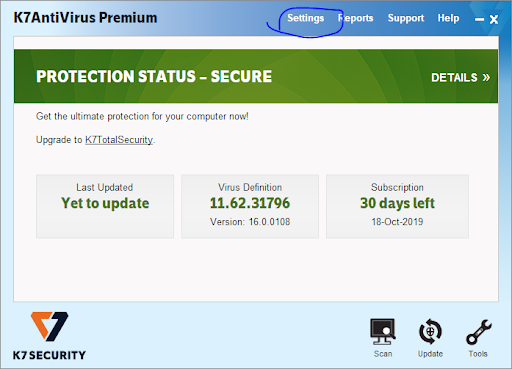
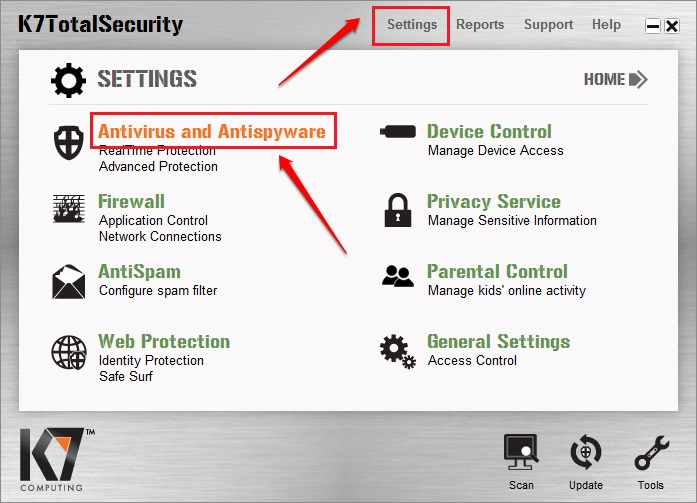
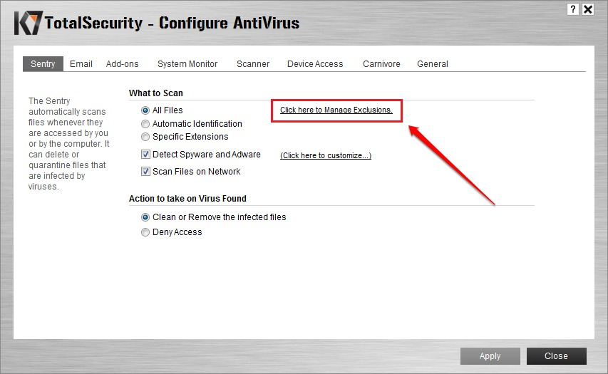
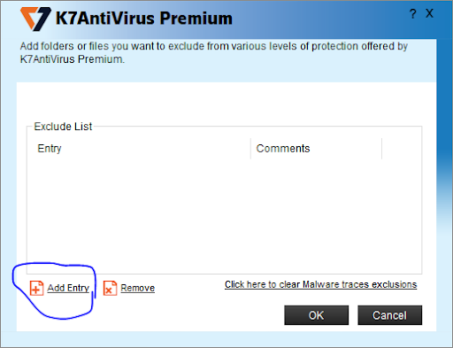
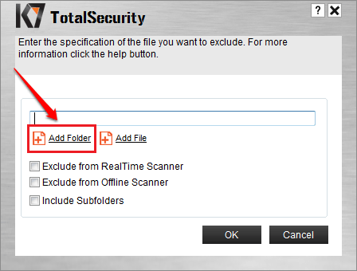
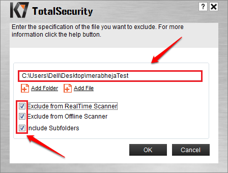

-
First of all open your k7 antivirus or K7 ultimate security in your computer.

-
Second we have to go to the setting and click on Antivirus and Antispyware in setting.

-
Now click on the button of "click here to manage exclusion".

-
A box is open to enter the entery of excluding apps or files.
click on the button of Add Entry.

-
Enter the path of the file or folder in the block. and check all three points for exclusion.

-
After checking the path and all three exclusions click on OK button.
